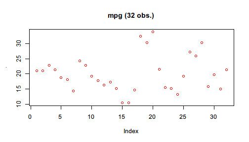
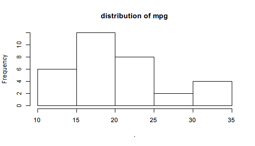
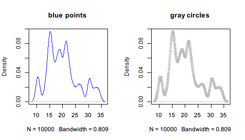

Pipe() creates a Pipe object that supports light-weight chaining with $. Basically, it is like a box containing a value and for this box $ is defined to perform first-argument piping.
The example in the page that introduces the first-argument piping feature of %>>% can be translated using Pipe() and $:
library(pipeR)
set.seed(123)
Pipe(rnorm(100, mean = 10))$
log()$
diff()$
sample(size = 10000, replace = TRUE)$
summary()
# <Pipe: summaryDefault table>
# Min. 1st Qu. Median Mean 3rd Qu. Max.
# -0.309500 -0.083720 -0.012360 -0.001854 0.071440 0.358400
You may notice that in the beginning of the pipeline, the numeric vector generated by rnorm() is converted to a Pipe object by Pipe(). Since $ for Pipe object is defined for first-argument piping, the name following $ will be interpreted to a function name, and then () will execute that function with the value in Pipe put to the first argument, and put the result into the next Pipe object. In this way, the pipeline continues chaining.
In other words, Pipe(x)$f() works like Pipe(f(x)), and Pipe(x)$f(a)$g(b) works like Pipe(g(f(x,a),b)), which can be further grown and become more nested if written without $ chaining.
Also note that the output does not look exactly the same with that produced by %>>% but with a header added on top of the summary table. Recall the version of code using the operator:
set.seed(123)
rnorm(100, mean = 10) %>>%
log %>>%
diff %>>%
sample(size = 10000, replace = TRUE) %>>%
summary
# Min. 1st Qu. Median Mean 3rd Qu. Max.
# -0.309500 -0.083720 -0.012360 -0.001854 0.071440 0.358400
In fact, the result produced by Pipe() is not really the summary table but a box (Pipe object) that contains it, and therefore the object can continue piping with $. Pipe object implements several generic functions to make it easier to inspect and manipulate the value in the box. To extract the inner value, call $value, or simply [] as shortcut.
set.seed(123)
Pipe(rnorm(100, mean = 10))$
log()$
diff()$
sample(size = 10000, replace = TRUE)$
summary()$
value
# Min. 1st Qu. Median Mean 3rd Qu. Max.
# -0.309500 -0.083720 -0.012360 -0.001854 0.071440 0.358400
With $value in the end of the pipeline, value is extracted from the Pipe object, and this object is no longer a Pipe so that $ won't pipe any more.
Here is another example that runs a linear regression with mtcars.
Pipe(mtcars)$
lm(formula = mpg ~ wt + cyl)
# <Pipe: lm>
#
# Call:
# lm(formula = mpg ~ wt + cyl, data = .)
#
# Coefficients:
# (Intercept) wt cyl
# 39.686 -3.191 -1.508
Use [] to extract the lm object inside the resulted Pipe object.
Pipe(mtcars)$
lm(formula = mpg ~ wt + cyl) []
#
# Call:
# lm(formula = mpg ~ wt + cyl, data = .)
#
# Coefficients:
# (Intercept) wt cyl
# 39.686 -3.191 -1.508
The Pipe header no longer exists, which indicates that the value is extracted.
Just like %>>%, in the function call after $ also supports . to represent the input value. For example,
Pipe(mtcars$mpg)$
plot(col = "red", main = sprintf("mpg (%d obs.)", length(.)))

You may notice that the previous plot() only produces graphics but the NULL value it returns are not explicitly printed. Pipe by design mutes NULL value as being printed. However, not all graphics functions return NULL. hist() is one example.
Pipe(mtcars$mpg)$
hist(main = "distribution of mpg")

The output is no longer NULL but a new Pipe object consisting of a histogram object with a few elements indicating its properties.
All Pipe objects are printed with, by default, a header like $value: class. If you find it annoying, you can turn off the header by setting the option Pipe.header to FALSE with
options(Pipe.header = FALSE)
This is NOT recommended because Pipe object and ordinary objects are essentially different. For better distinction, we suggest that you give all Pipe objects name that start with p and do not turn off this option.
The following example demonstrate a recommended use of Pipe object in multiple ways.
pmtcars <- Pipe(mtcars)$
subset(mpg >= quantile(mpg, 0.05) & mpg <= quantile(mpg, 0.95))
pmtcars$
lm(formula = mpg ~ wt + cyl)$
coef()
# <Pipe: numeric>
# (Intercept) wt cyl
# 36.630834 -2.528175 -1.418216
pmtcars$
lm(formula = mpg ~ wt + cyl + qsec)$
summary()$
coef()
# <Pipe: matrix>
# Estimate Std. Error t value Pr(>|t|)
# (Intercept) 33.4441378 6.8351140 4.8929890 5.453045e-05
# wt -2.8134666 0.9787605 -2.8745201 8.344557e-03
# cyl -1.2183510 0.5495775 -2.2168865 3.635652e-02
# qsec 0.1605394 0.3343038 0.4802202 6.354189e-01
Note that we create a Pipe object from mtcars and filters it by lower and upper quantile. The result is still a Pipe object so that we can pipe with it further until we use $value or [] to extract its value.
Since $ gets a function for Pipe object for first-argument piping, the function can be saved for repetitive uses.
For example, we resample mtcars$mpg and draws its density function estimated by Gaussian kernel method. Instead of directly plotting the graphics, we save plot in pipeline for further use.
density_plot <- Pipe(mtcars$mpg)$
sample(size = 10000, replace = TRUE)$
density(kernel = "gaussian")$
plot
The function is a partial function of built-in plot() because its contents are determined and only additional parameters of graphics are needed.
par(mfrow=c(1,2))
density_plot(col = "blue", main = "blue points")
density_plot(col = "gray", type = "o", main = "gray circles")

Note that when the partial function is determined, all the steps before the function are already evaluated, which means that the random numbers will not change each time we call the partial function density_plot().
It is useful when we need to do something only with different parameters but with the same input to the first argument.